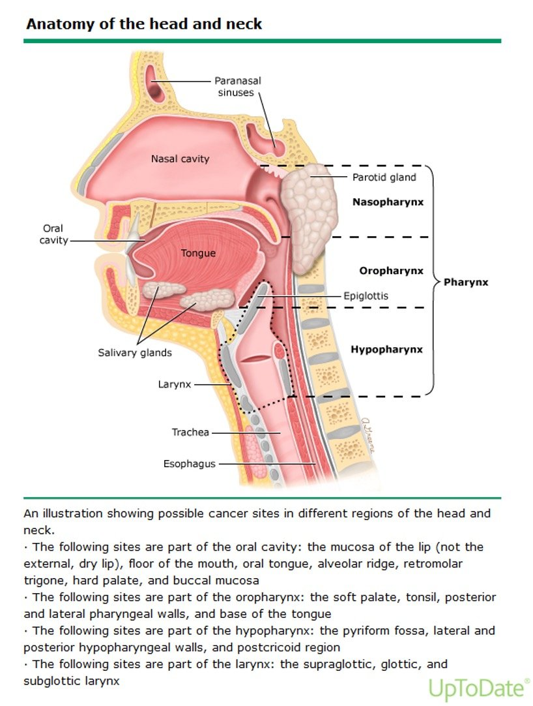
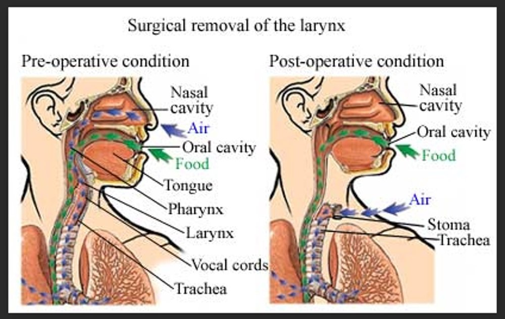
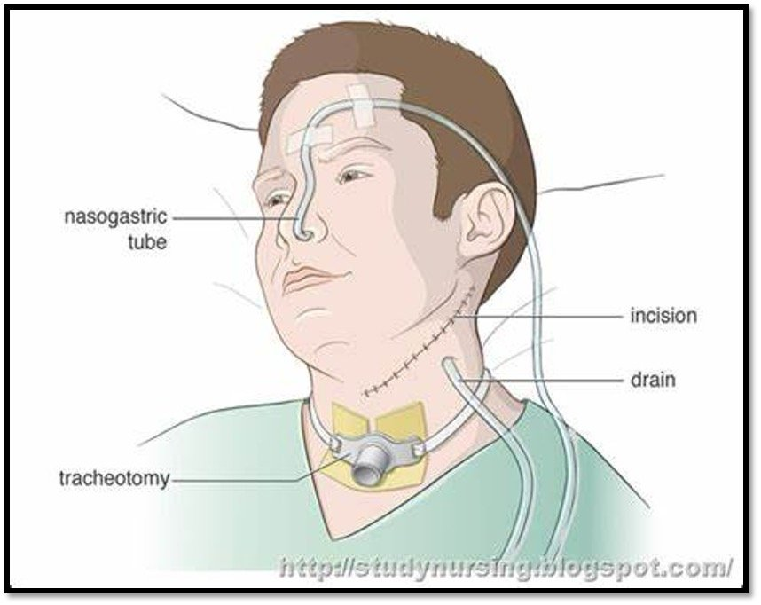

Week 1 · Topic 3
Head & Neck Cancer
What makes head & neck cancer so devastating is as much about the physical modification as anything else — a patient can lose their mandible, tongue, or larynx, which affects body image as well as function. And the airway runs right through this region.
Risk Factors & Presentation

- Tobacco use causes 85% of head & neck cancers.
- More common in men than women.
- Most often diagnosed at > 50 years old.
- If the patient is < 50, it's often associated with HPV (human papillomavirus) instead.
- Most patients already have locally advanced disease by the time they're diagnosed.
Treatment
Surgery is the first line of treatment. Radiation and chemotherapy are also used, but the cancer-specific details of those are covered later, in oncology — not in this lecture.
| Surgical Option | What It Involves |
|---|---|
| Vocal Cord Stripping | A less extensive option than removing the larynx entirely. |
| Laryngectomy | Removal of the larynx (the voice box) — "-ectomy" means removal. |
| Tracheostomy | Often follows a laryngectomy — "-ostomy" means opening. |
| Lymph Node Removal / Neck Dissection | Done if the cancer has metastasized or spread into the muscle — may involve dissecting neck muscles like the sternocleidomastoid. Can be an extensive surgery depending on how far the cancer has spread. |
Laryngectomy — What Changes
Worth pausing on, because it's simple but easy to overlook: normally, food goes down the esophagus, and air comes in through the mouth or nose and down the trachea. After a laryngectomy, the larynx (and the connection between the airway and the mouth/nose) is gone.

- Eating is still possible — the GI tract connection (esophagus) is intact. There may be a temporary tube feeding while post-op swelling heals, but eating normally is the eventual goal.
- Air now enters only through the stoma — never again through the nose or mouth.
- When the patient coughs, sputum comes out through the stoma — nothing comes out of the nose or mouth, because they're no longer connected to the airway.
Restoring Communication After a Laryngectomy
| Method | How It Works | Trade-Off |
|---|---|---|
| Artificial Larynx | A handheld device placed against the throat that provides vibration to produce speech. | Easy to use, can be used immediately after surgery — the most common option today. Can sound a bit robotic, but understandable. |
| Tracheoesophageal Voice Restoration | A valve device placed surgically that lets the patient talk. | — |
| Esophageal Speech | The patient sucks air into the esophagus, then forms words while "burping" the air back out. | Hands-free (no device needed) — but hard to learn, and can be difficult to understand depending on the patient's skill with it. |
Radical Neck Dissection & Post-Op Care
A radical neck dissection removes part of the neck muscles — and possibly salivary glands or major blood vessels — because of how far the cancer has spread. It can be disfiguring; part of the neck may visibly cave in where tissue was removed. These patients will typically have a trach, tube feeding, and a Jackson-Pratt (JP) drain.

| Post-Op Priority | Why |
|---|---|
| Airway patency — priority #1 | There's a lot going on in the neck after this kind of surgery. |
| Humidify the trach collar / O2 | Normally the nose and mouth humidify air before it reaches the lungs; a new trach bypasses that, so add humidification until the patient adjusts to breathing without it. |
| Get the patient up and coughing regularly; suction as needed | Keeps the airway clear. |
| Blood-tinged sputum in the first couple of days = expected finding | Trauma from the surgery itself. |
| Pulmonary toilet: manage secretions, stoma care, and pain | Keeps the patient comfortable enough to participate in their own recovery. |
| Start tube feedings right away (sometimes even before surgery) | These patients are often malnourished pre-op (haven't felt like eating) — good nutrition enhances healing. |
| Physical therapy and speech therapy, post-operatively | — |
Self-Test Flashcards
Click a card to flip it and check your answer.